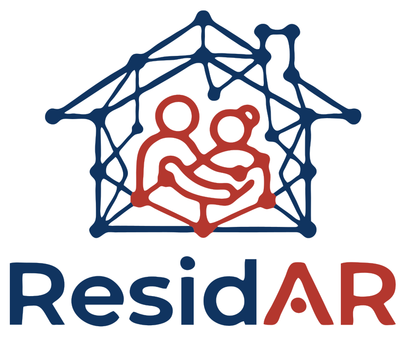
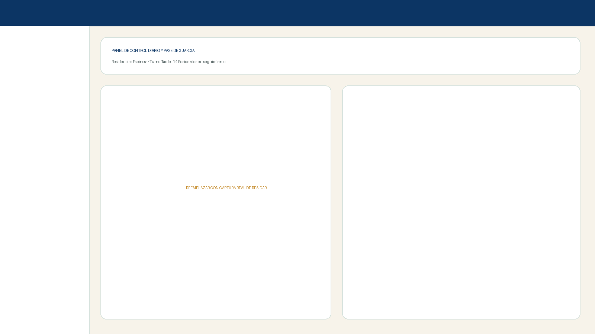

residAR
Sistema de Gestión Integral para Residencias de Adultos Mayores
Tribunal Evaluador: Ing. Cecilia Ortiz · Ing. María Irene Mac William · Ing. José Luis D'Agostino
La realidad asistencial en Residencias Espinosa
Un complejo geriátrico de 4 sedes asistenciales operando con información fragmentada.
Cliente Piloto Real
Córdoba, ArgentinaComplejo de residencias para adultos mayores con atención continua 24/7 en 3 turnos rotativos.
Polifarmacia en Planillas
Múltiples prescripciones médicas manuscritas sin validación cruzada.
Pase de Guardia Desconectado
Traspaso informal de novedades por cuadernos o WhatsApp entre turnos.
Dispersión de Insumos
Dificultad para conciliar el stock central frente al particular del residente.
Legajos en Carpetas Físicas
Historias clínicas y contratos archivados en papel sin trazabilidad de accesos.
El ciclo de vida del residente en residAR
La arquitectura del sistema modelada a partir de las 5 etapas del cuidado geriátrico.
Evaluación Inicial
- Entrevista familiar
- Relevamiento de salud
- Aptitud geriátrica
- Checklist documental
Ingreso y Cama
- Firma de contrato
- Asignación de cama
- Legajo e historia digital
- Ficha de gustos/hábitos
Atención Diaria
- Prescripción médica
- Signos vitales por turno
- Detección de alertas
- Salidas transitorias
Stock & Fármacos
- Recepción de lotes
- Firma y foto comprobante
- Stock central e individual
- Consumo por toma
Cierre de Estadía
- Cierre administrativo
- Liberación de cama
- Reconciliación de stock
- Archivo legal inmutable
14 Sprints de desarrollo estructurados en dos Releases
Evolución iterativa en Jira Software Cloud con disciplina de ingeniería y despliegue continuo.
Release 1 · Cierre del MVP
Sprints 1 a 7Release 2 · Hardening & SaaS
Sprints 8 a 14pg-boss.Cobertura funcional en dos grandes ejes
Solución integral que cubre desde la atención médica hasta la administración edilicia.
Eje Asistencial & Clínico
Atención al ResidenteEje Operativo & Logístico
Gestión InstitucionalTiempo estricto de demostración funcional
Hoja de Ruta del Pase en Vivo
Panel de Control Diario y Pase de Guardia
La interfaz táctil utilizada por enfermería para registrar signos vitales y transferir turnos.

Signos Vitales por Turno 01
Presión arterial, glucemia, pulso y temperatura inmediatosDetección de Alertas 02
Resaltado visual automático ante parámetros fuera de rangoIdentificación Fotográfica 03
Ficha con foto del residente para evitar errores de medicaciónPase de Turno Digital 04
Traspaso formal con firma y notas clínicas consolidadasModelo de Stock: Central vs. Individual por lote
Aislamiento por residencia con trazabilidad inmutable y consumo originado en la prescripción médica.
Stock Central de la Residencia
propietario_tipo = RESIDENCIA
Insumos generales, botiquín institucional y reservas de urgencia. No asociado a ningún residente en particular (residente_id = NULL).
Stock Individual del Residente
propietario_tipo = RESIDENTE
Medicamentos específicos provistos por la familia para su tratamiento. residente_id obligatorio.
Decisiones Arquitectónicas Fundacionales (ADRs)
Fundamentos técnicos documentados que resolvieron aislamiento, soberanía de datos y escalabilidad SaaS.
Multitenancy con Base de Datos Compartida y Residencia como Tenant Operativo
¿Cómo soportar múltiples organizaciones y residencias garantizando aislamiento operativo sin disparar costos de infraestructura?
Base de datos PostgreSQL única compartida. residencia_id es el tenant operativo obligatorio en cada consulta; organizacion_id es el agrupador superior empresarial.
Descartado: BD por tenant (costo prohibitivo de infraestructura y migraciones complejas). Trade-off: Requiere disciplina estricta en backend: cada consulta exige residencia_id.
Escalabilidad económica para residencias argentinas, mantenimiento simplificado de migraciones Prisma y aislamiento lógico estricto mediante guards.
Diagrama de Componentes y Capas del Sistema
Ecosistema modular, dominios asistenciales y tuberías de persistencia diseñadas para residAR.
El Futuro de residAR: Roadmap y Escalabilidad SaaS
Los 5 vectores de ingeniería para consolidar la plataforma en el mercado geriátrico nacional.
Portal Familiar Autónomo
Historias clínicas acotadas, muro de actividades y firma remota con validez legal.
IaC & Provisión SaaS
Automatización con Terraform y Ansible para desplegar clusters y DNS dinámico en Cloudflare.
Superadmin & CRM SaaS
Telemetría de uso por residencia, gestión comercial de leads y suscripciones mensuales.
Facturación & Obras Sociales
Liquidación mensual automática de estadías, extras y convenios de cobertura PAMI/IOMA.
Plugins & IoT Pie de Cama
Webhooks públicos para recetas provinciales y sensores Bluetooth de signos vitales continuos.
Arquitectura multitenant nativa probada en Homeserver UTN y completamente desacoplada del piloto inicial.
Conclusiones e Impacto del Proyecto residAR
Síntesis de valor entregado por el equipo de ingeniería.
Impacto Humano Real
Dignificación del cuidado y seguridad clínica para más de 80 adultos mayores en el piloto.Trazabilidad y Cero Papel
Blindaje legal inmutable en medicación, historias clínicas y pases de guardia.Arquitectura SaaS Desacoplada
Evolución exitosa de un cliente puntual a un producto multitenant escalable.Rigor Metodológico Scrum
14 sprints continuos, gestión formal en Jira y disciplina de ingeniería demostrada.¡Muchas Gracias! ¿Preguntas?
Ingeniería en Sistemas de Información · UTN Facultad Regional Córdoba · Comisión 5K1 · Grupo 3